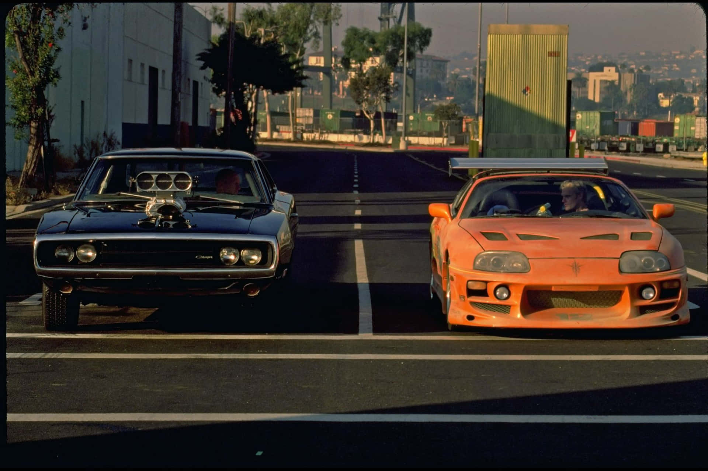
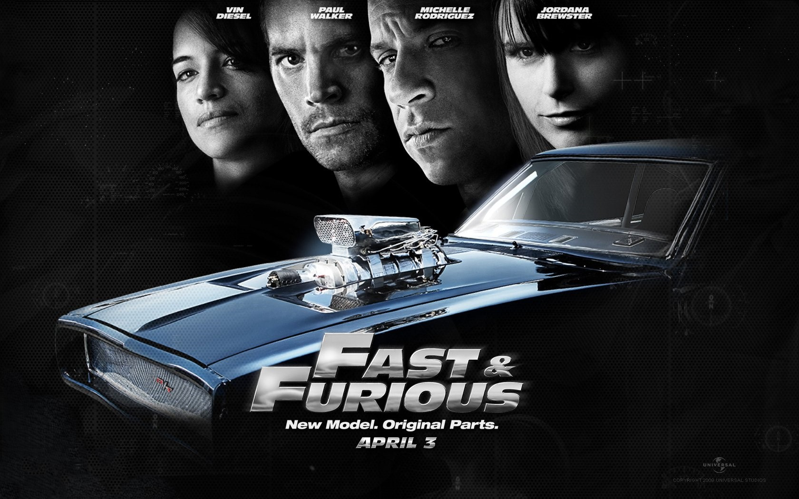

SOBRE LA PELÍCULA
Trama Principal
La historia sigue a Brian O'Conner (Paul Walker), un oficial de policía encubierto que se infiltra en el mundo de las carreras ilegales de Los Ángeles para investigar una serie de robos de camiones a alta velocidad. En su camino conoce a Dominic Toretto (Vin Diesel), el carismático líder de una banda y una leyenda de las pistas. La tensión de la película no solo reside en la investigación, sino en el dilema moral de Brian: su deber como policía frente a la lealtad y hermandad que empieza a sentir por Dom.
Opinión Personal
La historia (en mi opinión), cuenta como el agente encubierto O'conner se cambia de bando una vez que conoce al lider de la banda de ladrones y experto al volante Dominique Toretto. Claro que en el transcurso de la pelicula el "agente" cumple con su labor, pero poco a poco suceden cosas que lo hacen querer abandonar su vida y comenzar de nuevo con ésta familia. Todo esto a raiz del romance que se desarrolla a mediados de la pelicula con la hermana de Dom. Lo que inicialmente pretiendía Brian era juntar evidencia suficiente para poner tras las rejas a Toretto por los delitos que hacía, pero era tal el respeto y admiracion que le tenia. Que en el final le termina dando hasta su propio auto para que pueda escaparse. Esa fue su llave para formar parte de la banda en las películas posteriores. Sin dudas el público para ésta increhible historia fueron y son los aficionados por el tunning y la acción. Ya que a través de dichos recursos logra desencadenar su éxito cinematográfico. Sin lugar a dudas Rob Cohen (su director) hizo un análisis muy detallado a la hora de elegir los vehiculos y sus configuraciones mecánicas. Ya que utilizaron automóviles como el "Toyota Supra". Todos los fanáticos sabemos las prestaciones y la capacidad de desarrollo que tiene el motor 2JZ que traía en aquella época. Hoy en día sigue siendo uno de los preferidos a la hora de armar un vehiculo para carreras 1/4 milla.
Estilo y Género
Genero: Acción, Drama Criminal y Thriller.
Estilo Visual: Se caracteriza por su estética urbana, luces de neón, cámaras rápidas que simulan el efecto del óxido nitroso (NOS) y un enfoque técnico en los autos.
El Núcleo: Más allá de las persecuciones, el tema central es "la familia". La película establece la dinámica de respeto y protección entre los personajes que se convertiría en el sello distintivo de toda la franquicia.
Director: Rob Cohen

